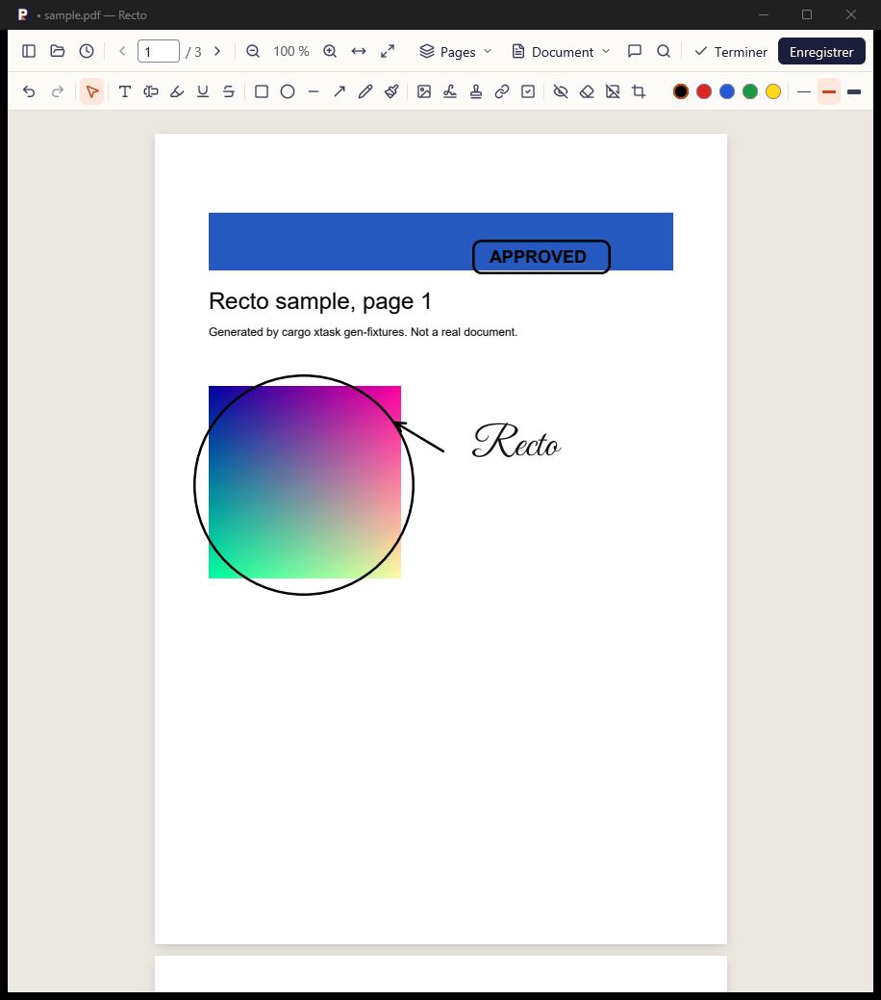

Vos PDF, lus et modifiés sur votre ordinateur.
Recto ouvre vos PDF en lecture, et passe en édition d'un clic : annoter, signer, remplir, réorganiser les pages, caviarder. Tout reste sur votre machine, sans compte ni envoi en ligne.
Libre et gratuit (licence MIT). Windows 10 et 11, macOS 11 et plus, Linux x86-64.
